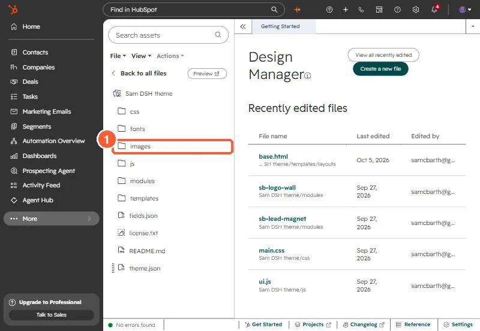
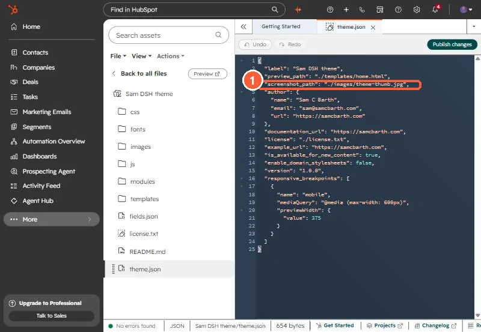

Short answer
When I uploaded my own theme with hs cms upload, the .webp files were skipped and nothing failed loudly. HubSpot's CLI repository has an open issue saying the Design Manager does not accept WebP, while the Knowledge Base lists WebP as a supported type in the Files tool. So keep theme assets (including the preview image in theme.json) as JPEG, PNG or SVG, and upload WebP images to the File Manager, then reference them from module image fields.
1. What happened
I was building a theme for my own site. Before uploading, I resized the client logo files and converted 46 of them to WebP, which took the logo folder from about 1 MB to about 0.4 MB. hs cms upload finished and the theme validated. On the page, every logo was missing. The theme tree in the Design Manager had the folders but none of the WebP files.


2. Why
An issue on HubSpot's CLI repository reports that the Design Manager does not accept WebP. HubSpot's supported file types article lists WebP as an image type for the Files tool, which is a different store. The CLI skips what the Design Manager will not take, so the upload looks clean. I confirmed it the plain way: the files were in my local folder and not in the Design Manager.
3. Where to put WebP instead
- Theme assets (icons, background art, the theme preview image): JPEG, PNG or SVG. My
theme.jsonpointsscreenshot_pathat a JPEG for this reason. - Content images (logos, photos editors swap): upload to the File Manager and pick them in an image field on the module. That is where my client logos ended up. They are customer data, not theme files, so the logo wall ships empty and editors add logos per page.


4. A quick check after upload
# any WebP still referenced by the theme?
grep -rn "\.webp" my-theme/templates my-theme/modules my-theme/cssFor other upload surprises, see theme upload validation errors.